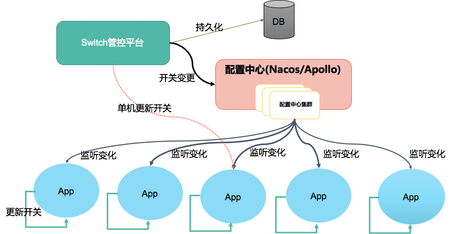
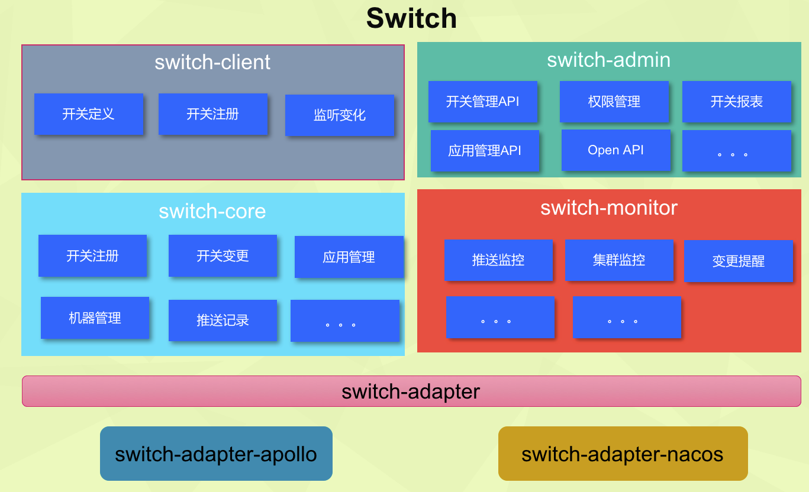
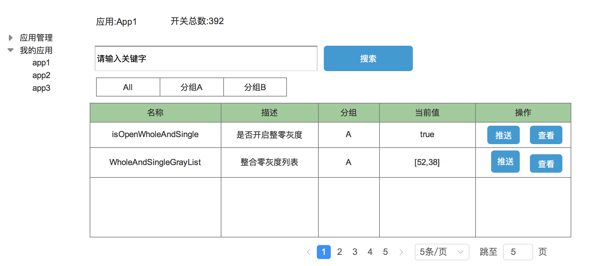
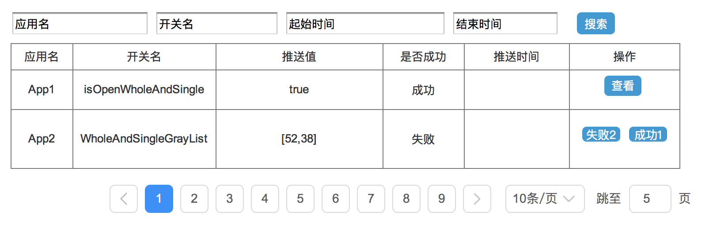

1.开关中间件
1.1 Switch概述
switch提供统一的方式来定义开关、统一的控制台和api来对开关进行查询和操控。Switch定义的开关包含丰富的可读性属性，为开关信息的维护和传承提供便利。
1.2 Switch使用的业务场景
在分布式系统中为什么要使用开关？例如双十一电商平台需要做促销活动，此时订单量暴增，在下单环节，可能需要调用A、B、C三个接口来完成，但是其实A和B是必须的，C只是附加的功能（例如在下单的时候获取用户常用地址，或者发个推送消息之类的），可有可无，在平时系统没有压力，在容量充足的情况下，调用下没问题，但是在特殊节日的大促环节，系统已经满负荷了，这时候其实完全可以不去调用C接口，怎么实现这个呢？改代码重新发布？no，这样不太现实，于是开关诞生了，开发人员只要简单执行一下命令或者点一下页面，就可以关掉对于C接口的调用，在请求高峰过去之后，再把开关恢复回去即可。类似的使用场景还有A/B Test、灰度发布和数据的不停服切换等。
早期这样的业务开关都是由各个部门自行实现和管理。随着业务开关的数量的增多，大量的业务开关信息都分布在不同的系统中，甚至代码中，造成运维的成本越来越高，当开关不使用之后，无法进行统一的下线处理。 因此需要开发一套统一的标准和规范的业务开关管理的Switch平台。还有其它业务使用场景，如下所示:
- 业务降级中需要对代码中的static值的修改
- 应用不同版本的兼容
- 不用时间走不同的优惠服务
- 采用业务开关的方式，通过修改程序中的static值实现业务逻辑的切换。
- 业务复杂，从面向对象到面向开关编程
Q:是否需要支持跨应用的开关推送,某些业务场景需要跨应用推送
A:目前
阿里的开关不支持跨应用开关的推送，某个业务场景需要好几个应用一起打开开关。
2.2 Switch的分类:
我们可以将开关分为三大类，分别是功能开关、降级开关、灰度开关：
功能开关：针对某一个功能是否打开，例如在订单下单的时候需要获取下单用户的历史换绑手机号信息，但是由于B系统只是提供了接口定义，实际业务还未开发完成，A系统可以先提前开发并上线，待B系统上线之后，A系统将该功能开关打开。
降级开关:典型的应用场景是电商做促销的时候，比如双十一电商做促销，用户下单的时候获取用户历史常用地址，因为双十一系统已经达到负荷，为了系统性能，将该业务逻辑降级。或者A系统调用B系统，由于B系统整体宕机，为了不影响A系统继续运行，可以手动将B系统降级等。
灰度开关:针对某一功能做灰度，例如我们需要针对刷单用户在下单过程中做拦截，为此我们在下单阶段做了一套黑白名单处理，但是我们也无法知晓该套黑白名单的正确率多少，为了避免造成误拦，我们需要对该功能做灰度采样，以便及时调整我们的黑白名单逻辑。通常的灰度策略为 1% 灰度，10%灰度，30%灰度，50%。。。
2.3 分布式Switch的需求
开关的核心需求主要有以下几点: 1. 支持开关的分布式化管理
开关统一管理，发布、更新等操作只需在管控平台上执行一次变更，整个集群生效。当开关值
发生变更，订阅该开关的客户端会自动感知发现变更，进而应用内部更新值。支持
单台服务器的开关变更具有
容灾机制，保证服务的HA（高可用）管控平台HA > 部署两个，通过Ngnix或LVS保证高可用
服务集群的高可用,当集群中的一台server不可用了，client发现后可以自动切换到其他server上进行访问 > 基于Apollo或者Nacos实现
客户端具备容灾机制，当开关中心完全不可用，可以在客户端对开关进行操作。 > 配置中心或管控平台Http接口实现对客户端的操作
2.4 Switch竞品分析
目前开关中间件市面上开源可用的产品为0，下面对竞品做简单介绍对比，如下表所示:
| 开关 | 数据一致性 | 说明 | 备注 |
|---|---|---|---|
| 点我达 | 基于Zk | 依赖ZK，有管控平台 | 点我达开关设计 |
| 阿里 | 基于Diamond（即目前开源的Nacos中的Config) | 依赖配置中心Diamond，有管控平台，支持Http API变更开关 |
2.5 Switch具备的功能
通过对目前市面上开关的竞品分析，下面的功能将是Switch的RoadMap需要实现的功能
3.Switch设计
Switch的设计将会从Client，管控平台，适配多种配置中心，高可用等几个角度来设计。做到以下几点
Switch尽可能使用简单,switch框架提供非常简单的使用方式，对应用方原来的使用侵入小
基于配置中心Nacos或Apollo实现推送，为了保证更可靠需要支持Http API的推送方式
3.1 Switch的方案设计
Switch总体架构，如下图所示:

a. Switch Admin-管理控制台
管理控制台主要用于对分组、应用及开关进行操作，核心功能就是对开关进行控制，包括分布式和单机操作模式
b. Apollo或Nacos
分布式开关统一注册中心，主要提供变更通知服务，客户端通过订阅开关节点，实时获取开关变更信息，从而同步更新到本地内存 * c. 开关client
基于spi机制加载应用内开关组件，并注册到配置中心，并基于netty实现tcp及http通信交互，方便本地及管理控制台调用。
3.2 功能模块设计
Switch的功能模块设计图，如下所示:

| 模块 | 说明 | 备注 |
|---|---|---|
| switch | 父模块 | |
| switch-core | 开关的核心模块 | 核心逻辑 |
| switch-adpater | 开关底层抽象适配 | |
| switch-admin | 开关管控平台 | 管控平台 |
| switch-adpater-apollo | 开关管控平台适配阿波罗 | 通过OpenAPI下发开关 |
| switch-adpater-nacos | 开关管控平台适配阿波罗 | 通过OpenAPI下发开关 |
| switch-client | 开关Client的父模块 | |
| switch-client-adapter | 开关Client的适配器接口 | |
| switch-client-adapter-apollo | 开关客户端Apollo Starter提供的二方包 | |
| switch-client-adapter-nacos | 开关客户端Nacos Stater 提供的二方包 |
3.3 Switch的客户端设计
Switch开关Client会以Spring Boot Starter的方式嵌入到应用中，采用注解的方式让开发人员非常方便的接入开关平台，示例代码如下:
public class AppSwitch {
@Switch(groupName="whole_Single_Gray",desc="整零灰度开关" )
public static boolean isOpenWholeAndSingleGray=true;
@Switch(groupName="whole_Single_Gray",desc="整零灰度列表")
public static List wholeAndSingleGrayList;
}
3.3.1 开关命名重复问题
在设计系统的时候，开关是否要共享给所有系统，还是其中某一个系统，如果共享给所有系统，那么有权限的人对开关命名的时候难免会重复，针对此，一个系统对应一个appid，在一个appid内开关名称不允许有重复，只有该appid的owner才有权限对该appid的下的开关做操作。
这里的AppId和配置中心的Appid一一对应
4.管控平台设计
4.1管控平台原型设计
4.1.1 开关管理
整个应用某个开关推送

4.1.2 应用管理
对接入开关中间件的应用进行管理
4.1.3 推送记录

4.1.4 机器管理
接入开关中间件的开关应用实例机器管理
4.1.4 开关权限管理
开关的修改变更管理
4.2 表设计
DROP TABLE IF EXISTS `switch`;
CREATE TABLE `switch` (
`id` bigint(20) NOT NULL AUTO_INCREMENT COMMENT '主键',
`name` varchar(150) DEFAULT NULL COMMENT '开关名',
`app_name` varchar(200) NOT NULL COMMENT 'app的名称',
`value` varchar(1000) NOT NULL COMMENT '开关对应的值',
`group_name` varchar(128) NOT NULL COMMENT '开关分组名称',
`group_code` varchar(128) NOT NULL COMMENT '开关分组code',
`is_deleted` tinyint(4) NOT NULL DEFAULT '0' COMMENT '是否删除 0 否，1 已经删除',
`create_time` timestamp NOT NULL DEFAULT '1970-01-02 00:00:00' COMMENT '创建时间',
`update_time` timestamp NOT NULL DEFAULT CURRENT_TIMESTAMP ON UPDATE CURRENT_TIMESTAMP COMMENT '更新时间',
`status` tinyint(4) NOT NULL COMMENT '开关状态(0 注册、1 在线、2.下线 3 失效)',
PRIMARY KEY (`id`),
) ENGINE=InnoDB DEFAULT CHARSET=utf8 COMMENT='开关表';
DROP TABLE IF EXISTS `machine`;
CREATE TABLE `machine` (
`id` bigint(20) NOT NULL AUTO_INCREMENT COMMENT '主键',
`host_name` varchar(150) NOT NULL COMMENT '主机名',
`ip` varchar(150) NOT NULL COMMENT 'ip',
`switch_id` bigint(20) NOT NULL COMMENT '开关的Id',
`switch_name` varchar(1000) NOT NULL COMMENT '开关名称',
`switch_value` varchar(1000) NOT NULL COMMENT '开关当前的值',
`create_time` timestamp NOT NULL DEFAULT '1970-01-02 00:00:00' COMMENT '创建时间',
`update_time` timestamp NOT NULL DEFAULT CURRENT_TIMESTAMP ON UPDATE CURRENT_TIMESTAMP COMMENT '更新时间',
`is_deleted` tinyint(4) NOT NULL DEFAULT '0' COMMENT '是否删除 0 否，1 已经删除',
PRIMARY KEY (`id`),
) ENGINE=InnoDB DEFAULT CHARSET=utf8 COMMENT='机器表';
DROP TABLE IF EXISTS `push_log`;
CREATE TABLE `push_log` (
`id` bigint(20) NOT NULL AUTO_INCREMENT COMMENT '主键',
`switch_id` bigint(20) NOT NULL COMMENT '开关的Id',
`switch_name` varchar(100) NOT NULL COMMENT '开关名称',
`switch_value` varchar(1000) NOT NULL COMMENT '开关当前的值',
`operator_name` varchar(20) NOT NULL COMMENT '操作人姓名',
`host_name_list` varchar(150) NOT NULL COMMENT '主机名列表',
`machine_id_list` bigint(20) NOT NULL COMMENT '机器id列表',
`ip_list` varchar(150) NOT NULL COMMENT 'ip',
`status` tinyint(4) NOT NULL COMMENT '推送 0 成功 1 失败',
`create_time` timestamp NOT NULL DEFAULT '1970-01-02 00:00:00' COMMENT '创建时间',
`update_time` timestamp NOT NULL DEFAULT CURRENT_TIMESTAMP ON UPDATE CURRENT_TIMESTAMP COMMENT '更新时间',
`is_deleted` tinyint(4) NOT NULL DEFAULT '0' COMMENT '是否删除 0 否，1 已经删除',
PRIMARY KEY (`id`),
) ENGINE=InnoDB DEFAULT CHARSET=utf8 COMMENT='开关推送记录';
5.开关接入
引入SDK，配置应用名自动注册发现接入
5.1 定义开关
通过@Switch注解即可定义开关。
6 总结
Switch开关中间件还在设计开发之中，后续会分享更多内容。